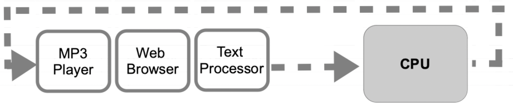
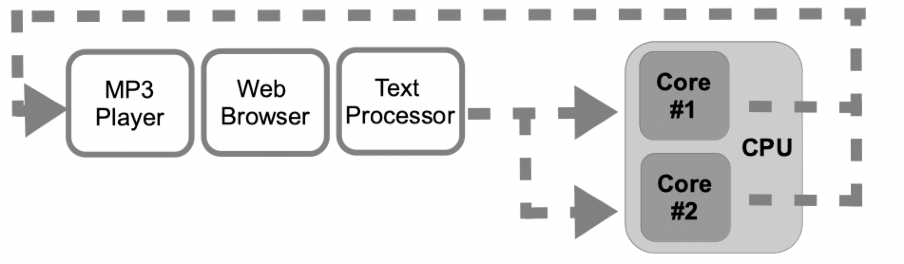

Introduction to concurrent programming
1. Programs and processes
- Program: A set of instructions packaged as a bundle, that helps the user solve a problem or complete a task.
- When a program is running, it becomes a process.
- Process: A set of data and instructions placed in memory and handled by the processor and the operating system to complete a task.
Elements of a process
A program counter: an index that points to the concrete instruction we are currently running among all the instructions that are part of the program.
A memory-space: Where all the data and instructions needed by the program are placed, loaded and edited while the program is running.
1.1 The operating system and its processes
The OS is the intermediary between the user and the programs they use. It runs the programs and optimizes the usage of all the computer resources.
All the modern OS can run several programs at the same time. That type of concurrency is commonly called multitask.
However, it's not the kind of concurrency we are going to deal with in this unit.
2. Concurrent Programming
Concurrency lets the system run several processes at the same time.
We can run all the tasks in a single processor, in multiple processors or in several cores inside a processor.
Single processor
Concurrency:There is only one process running at a time. The OS alternates the execution between several processes in order to grant the user the experience of having all tasks running together.
Multiple processors or multiple cores
Parallel Processing:Each core is in charge of running one process. If there are more processes than cores, concurrency is also applied by the OS.
3. Processes and threads
- Process: Different programs trying to use the resources of the computer.
- Threads: Different subprograms that origin from a main program. They work as the processes, but they share a parent process.
3.1. Process/Threads states
Each process/thread can be in any of the following states during its life period.
- New: the process or thread has been just created, but it has not started running yet.
- Ready: the process or thread is not currently running, but it is ready to do it.
- Running: the process or thread is currently running on a given core or processor.
- Locked: the process or thread is waiting for some event to happen. This event may be a user input, a file unlocking… Whenever this event happens, the process becomes ready.
- Finished: the process or thread has finished its task, or the operating system has forced it to finish with an interruption.

3.2. Process/Threads context
Context: The data saved when a process or thread changes its state from running to ready or locked.
When this happens, it has to leave temporarily the processor or core. The OS will save the context data in order to recover it when it comes back to the processor.
Context: Difference between processes and threads
Whereas the processes have completely independent contexts, threads that are part of the same parent process share their memory space. This implies:
- Threads are more efficient memory wise.
- As they share the same memory space, if we are not careful we may alter shared data we did not want to alter.
3.3. Process/Thread trees
When we run a program, a process is created in memory. Then, other processes or threads may be created inside the application and so on. This creates a tree rooted in the initial program, which is rooted in the OS. We can conclude that every process/thread has a parent process/thread.